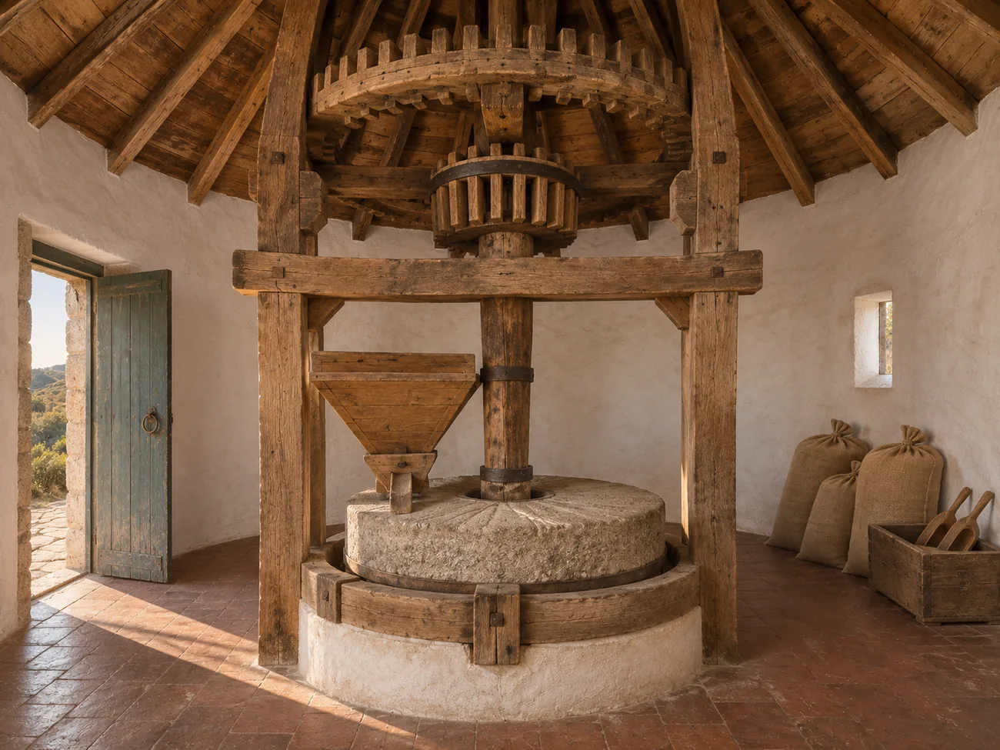

Sete espaços · um concelho
Dez mil anos entre a serra e o mar, num único bilhete.
Quatro museus no centro histórico de Aljezur, um na Carrapateira e dois em Odeceixe. O estado de cada espaço é calculado à hora a que está a ler esta página.
Bilhete único
Um bilhete, quatro museus do centro histórico.
O Museu Municipal, o Museu Antoniano, a Casa-Museu Pintor José Cercas e o Museu de Arte Sacra partilham a mesma entrada, à venda em qualquer um deles. Na Carrapateira o bilhete é próprio. Em Odeceixe, a entrada é livre.

Próxima fase
Percorrer os sete espaços sem sair de casa.
Uma visita virtual em 360°, sala a sala, com os mesmos textos e horários desta página. Pensada para escolas que preparam a vinda, para quem investiga à distância e para quem decide o roteiro antes de chegar à Costa Vicentina.
Requer fotografia panorâmica feita no local, espaço a espaço. Fase autónoma, a orçamentar à parte.
Falar sobre a visita virtualMarcação
Marcar uma visita.
Visitas guiadas, grupos escolares e, de outubro a maio, o Museu Antoniano e a Casa-Museu José Cercas, que nessa época só abrem com marcação.
- O pedido chega ao serviço certoCada espaço tem o seu responsável. O pedido segue para quem trata daquele museu, sem passar por um balcão geral.
- Resposta em dois dias úteisConfirmação da data, da hora e do ponto de encontro. As visitas guiadas aos museus do centro histórico começam no Museu Municipal.
- Grupos e visitas escolaresA dimensão do grupo é combinada consigo antes da visita. No Museu Adega de Odeceixe só podem estar seis pessoas de cada vez no interior.
Pedido registado
Receberia agora um e-mail de confirmação, e o pedido seguiria para o serviço responsável por este museu.